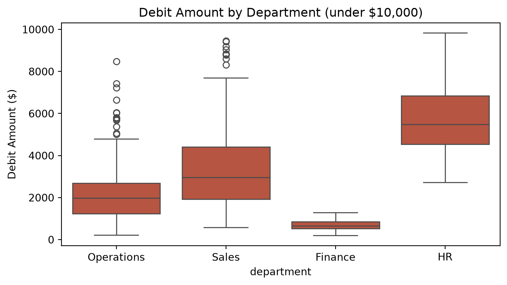
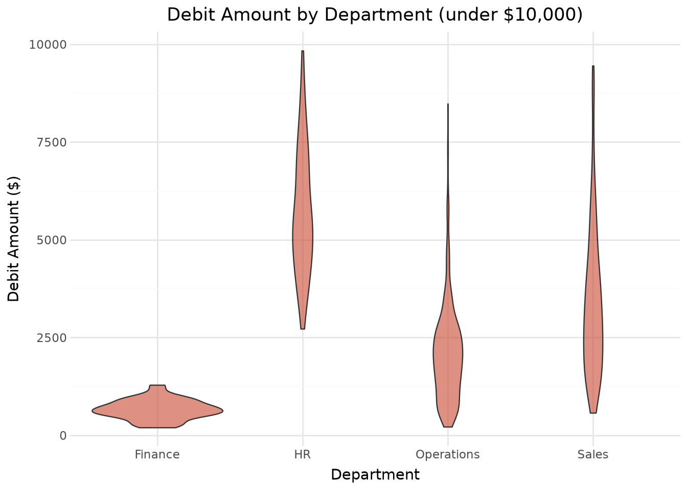
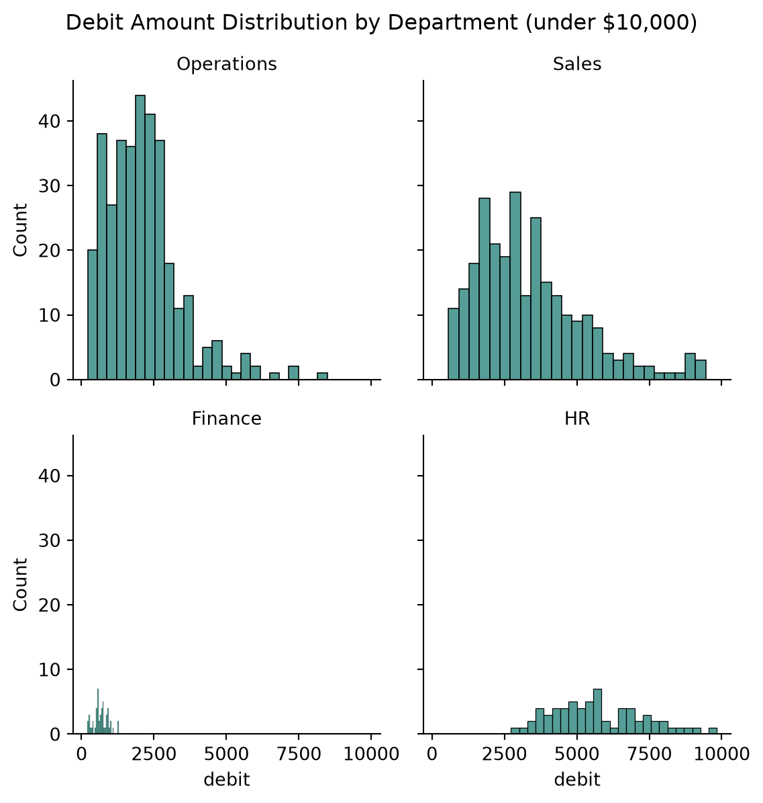
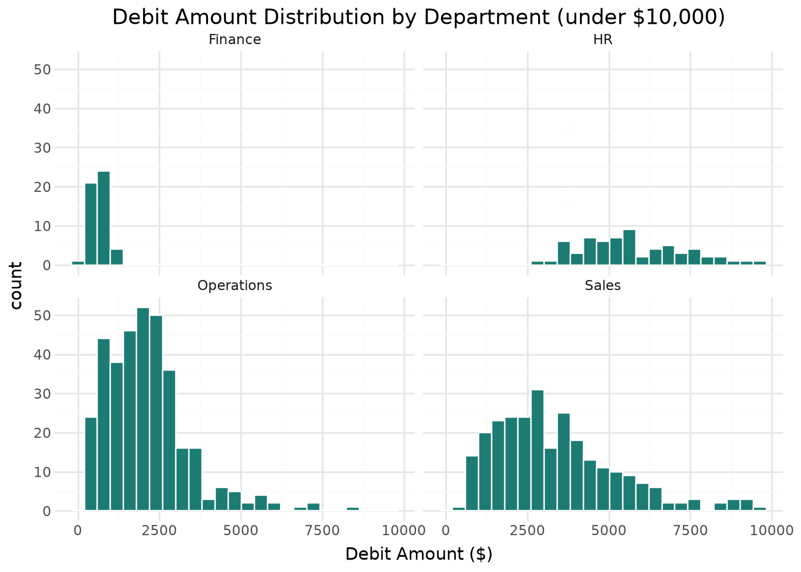

By the end of this chapter, you should be able to:
Explain why visualization complements (rather than replaces) the numeric EDA from Chapter 5
Describe the difference between seaborn’s statistical-plotting approach and plotnine’s grammar-of-graphics approach
Create bar charts, line charts, distribution plots, scatter plots, heatmaps, and faceted charts for accounting data using both libraries
Recognize misleading chart design choices, especially truncated axes, and apply basic design principles for financial visualizations
Choose an appropriate chart type for a given accounting analytics question
6.1 Why Visualize? From Numbers to Insight
Chapter 5 gave us numbers: a mean of $4,044, a median of $2,457, seven z-score outliers. Those numbers are precise, but they take effort to absorb, and they don’t always reveal a pattern’s shape at a glance. A well-designed chart can communicate the same finding to a controller or audit committee in seconds, and can reveal patterns — a skew, a cluster, a trend — that are much harder to spot from a table of statistics alone.
This chapter builds on the same dataset from Chapter 5, general_ledger_large.csv, and turns several of that chapter’s numeric findings into visuals.
6.2 Two Visualization Philosophies: Seaborn vs. Plotnine
This chapter teaches two Python visualization libraries - seaborn and plotnine - so you can compare the same chart built two different ways:
Seaborn, built on top of matplotlib, provides ready-made statistical plotting functions (barplot, histplot, scatterplot) — you call a function that matches your chart type, and pass in your data and variables.
Plotnine, a Python implementation of R’s ggplot2, uses a grammar of graphics: you build a plot by layering independent components — data, aesthetic mappings, geometric shapes — with +.
Seaborn
Plotnine
Approach
Pick a function matching your chart type
Layer components: data + aesthetics + geometry
Built on
matplotlib
Its own rendering, inspired by R’s ggplot2
Learning curve
Fast to get a standard chart working
Slightly steeper at first, very consistent once learned
Customization
Matplotlib escape hatch available for fine control
Everything is a layer you can add/replace
Common in accounting/finance practice
Very common, well-documented
Growing, especially among analysts with R backgrounds
We’ll also use plain matplotlib in one section later in this chapter, for a case where low-level control over a custom layout is genuinely useful — but for the vast majority of charts, seaborn or plotnine will get you there faster.
import pandas as pdimport seaborn as snsimport matplotlib.pyplot as pltfrom plotnine import*gl = pd.read_csv("data/general_ledger_large.csv")gl["entry_date"] = pd.to_datetime(gl["entry_date"])# Add account_type, matching each account to its category# (In Chapter 4, we got this via a join to chart_of_accounts.csv — a simple# mapping works just as well here since this chapter's focus is visualization)account_type_map = {"Cash": "Asset", "Accounts Receivable": "Asset", "Inventory": "Asset","Prepaid Insurance": "Asset", "Accumulated Depreciation - Equipment": "Contra-Asset","Accounts Payable": "Liability", "Notes Payable": "Liability","Sales Revenue": "Revenue","Cost of Goods Sold": "Expense", "Salaries Expense": "Expense","Rent Expense": "Expense", "Utilities Expense": "Expense","Depreciation Expense": "Expense", "Insurance Expense": "Expense","Interest Expense": "Expense",}gl["account_type"] = gl["account"].map(account_type_map)debit = gl[gl["debit"] >0].copy()debit.head()
entry_id
entry_date
account
debit
credit
department
posted_by
account_type
0
JE3253
2025-01-01
Cost of Goods Sold
1231.76
0.0
Operations
mchen
Expense
2
JE3413
2025-01-01
Accounts Receivable
3024.76
0.0
Sales
agarcia
Asset
4
JE3476
2025-01-01
Cash
4476.03
0.0
Sales
rpatel
Asset
6
JE3030
2025-01-02
Accounts Payable
1488.48
0.0
Operations
agarcia
Liability
8
JE3066
2025-01-02
Cost of Goods Sold
2705.81
0.0
Operations
rpatel
Expense
6.3 Bar Charts: Comparing Categories
A bar chart is the natural choice for comparing a total across categories — here, total debit amount by department.
Sales accounts for by far the largest share of debit volume, followed by Operations, HR, and Finance — consistent with the grouped statistics we computed in Chapter 5.
6.4 Line Charts: Trends Over Time
Line charts are the natural choice for showing change over time — here, total debit volume by month across the fiscal year.
Three months — March, August, and December — stand out with noticeably higher totals. If you recall from Chapter 5, this is exactly where several of our seven z-score-flagged outlier transactions landed. A line chart makes that timing pattern immediately visible in a way that a table of monthly totals would not.
6.5 Distribution Plots: Revisiting Chapter 5, Properly Styled
Chapter 5 showed that transaction amounts are heavily right-skewed, and that zooming in on amounts under $10,000 revealed the underlying shape more clearly. Let’s rebuild that finding with proper statistical plotting tools.
Seaborn’s kde=True option overlays a smoothed density curve directly on the histogram — a nice way to see the distribution’s overall shape without being distracted by individual bin heights.
Let’s also compare distributions across departments with a boxplot and a violin plot, which shows both the summary statistics (boxplot) and the full shape of the distribution (violin).
plt.figure(figsize=(7, 4))sns.boxplot(data=zoomed, x="department", y="debit", color="#c9482f")plt.title("Debit Amount by Department (under $10,000)")plt.ylabel("Debit Amount ($)")plt.tight_layout()plt.show()

( ggplot(zoomed, aes(x="department", y="debit"))+ geom_violin(fill="#c9482f", alpha=0.6)+ labs(title="Debit Amount by Department (under $10,000)", x="Department", y="Debit Amount ($)")+ theme_minimal())

TipConnect to Practice
Finance’s violin/box shape is noticeably narrower and lower than the others — consistent with the low coefficient of variation we calculated for Finance in Chapter 5. Seeing this visually, rather than just as a single CV number, makes the point land faster for a non-technical audience.
6.6 Scatter Plots: Spotting Outliers Visually
Chapter 5 flagged seven transactions using a z-score threshold. Let’s plot every transaction over time and highlight those outliers directly.
The seven outliers are immediately obvious, sitting far above the dense cluster of routine transactions near the bottom of the chart — this is a far faster way to communicate “here’s what stands out” to a reviewer than a filtered table alone.
6.7 Heatmaps: Cross-Tabulated Data
A heatmap is well-suited to showing a two-way summary — here, total debit volume by department and account type at once.
This view immediately shows which department-account combinations don’t occur at all (the empty/zero cells) versus where activity concentrates — Sales transactions are almost entirely Asset-type accounts (Cash, Accounts Receivable), while Operations activity is spread across Asset, Expense, and Liability accounts.
6.8 Faceting: Small Multiples
Faceting splits one chart into a grid of smaller panels, one per category — a powerful way to compare distribution shapes across groups at a glance, rather than overlaying them all on one crowded chart.
g = sns.FacetGrid(zoomed, col="department", col_wrap=2, height=3)g.map_dataframe(sns.histplot, x="debit", bins=25, color="#1c7c73")g.set_titles("{col_name}")g.figure.suptitle("Debit Amount Distribution by Department (under $10,000)", y=1.03)plt.show()

( ggplot(zoomed, aes(x="debit"))+ geom_histogram(bins=25, fill="#1c7c73", color="white")+ facet_wrap("~department")+ labs(title="Debit Amount Distribution by Department (under $10,000)", x="Debit Amount ($)")+ theme_minimal())

Faceting makes it easy to see, for example, that Finance’s transaction volume is both much smaller in count and much more tightly clustered near zero than the other three departments — a pattern that would be much harder to notice in a single combined histogram.
6.9 When to Reach for Matplotlib
Seaborn and plotnine handle the overwhelming majority of accounting charts you’ll need. Occasionally, though, you want a custom multi-panel layout — combining several unrelated chart types into a single “dashboard” figure — where matplotlib’s low-level control is genuinely the easier path.
This kind of combined dashboard figure — several related charts arranged in one image — is a common deliverable format for a management reporting package. Matplotlib’s GridSpec gives you precise control over panel sizes and positions that would be awkward to achieve directly in seaborn or plotnine, which is why it’s worth knowing even if you use it rarely.
6.10 Design Principles for Accounting Visualizations
A technically correct chart can still mislead a reader if it’s designed carelessly. A few principles worth internalizing:
Both charts show identical data. The left version, with its y-axis starting at $150,000 instead of zero, makes the dip between March and May look like a dramatic collapse. The right version, with a y-axis starting at zero, shows the same fluctuation as the far more modest change it actually is. This is one of the most common ways financial charts mislead — intentionally or not — and one of the easiest to check for: look at where the y-axis starts.
6.10.2 Other Design Principles
Color choice matters. Avoid relying on red/green alone to signal “bad/good” — a meaningful share of viewers have red-green color vision deficiency and won’t be able to distinguish them. Pair color with position, labels, or a different visual encoding (e.g., an icon or explicit text) where the distinction matters.
Label clearly for your actual audience. A chart for an audit committee or controller should have a clear title, labeled axes with units (e.g., “$”, not just numbers), and should not assume the reader already knows what “debit” and “credit” refer to in this specific context.
Match the chart type to the question. A line chart implies a trend over a continuous variable (usually time) — using one to connect unrelated categories (like departments) implies a false sense of order or continuity. A bar chart is almost always the better choice for comparing discrete categories.
6.11 Chapter Summary
Visualization complements numeric EDA (Chapter 5) by making patterns — trends, skew, clusters, outliers — visible at a glance, especially for non-technical audiences.
Seaborn offers ready-made statistical plotting functions; plotnine builds charts by layering grammar-of-graphics components — both accomplish the same tasks with different syntax philosophies.
Bar charts suit category comparisons, line charts suit trends over time, histograms/boxplots/violins suit distributions, scatter plots suit relationships (including visually spotting outliers), heatmaps suit two-way cross-tabulated summaries, and faceting enables side-by-side comparison across groups.
Matplotlib remains useful for custom multi-panel layouts that don’t fit neatly into seaborn’s or plotnine’s higher-level interfaces.
Truncated y-axes are one of the most common ways financial charts mislead, by exaggerating the apparent magnitude of change — always check where a y-axis starts, both in your own work and when reviewing others’.
Good design (color choice, clear labeling, appropriate chart type) is not a cosmetic afterthought — it directly affects whether your audience draws an accurate conclusion.
6.12 Discussion Questions
Choose one chart from this chapter and recreate it in the other library (if you focused on the seaborn tab, try plotnine, and vice versa). Which did you find more intuitive, and why?
Look back at the misleading vs. honest y-axis example. Can you think of a real-world scenario in accounting or finance reporting where someone might be tempted to truncate an axis, intentionally or not?
Why might a violin plot reveal something a boxplot alone would miss, even though both summarize the same underlying data?
6.13 Exercises
Build a faceted distribution plot (like the one in this chapter) using posted_by instead of department. Are any employees’ transaction patterns visually distinct from the others?
Recreate the department bar chart from this chapter, but sort the bars from largest to smallest total debit rather than alphabetically. (Hint: sort the underlying DataFrame before plotting.)
Find or construct a “bad” chart — either one you build yourself with a deliberately truncated axis or misleading color choice, or one you find in the wild — and write a short critique (150 words) explaining what’s misleading and how you would redesign it.
Using the heatmap section as a starting point, build a similar department x account-type heatmap, but for credit instead of debit. How does the pattern compare to the debit-side heatmap?